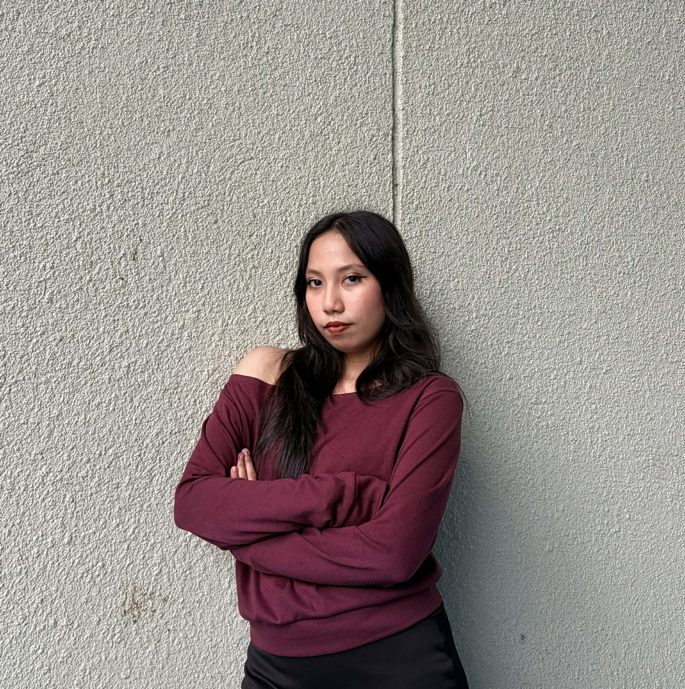

About me
Know more about the creator of this portfolio.

Hi, I am Yzabelle! I'm a 21 year old 4th year Computer Science student stepping outside my usual code editor to explore my creative side. While logic and algorithms take up most of my time, art has always held a special place in my heart.
Ever since I was a kid watching YouTube creators like DrawingWiffWaffles and dreaming of owning my own art supplies, I’ve been fascinated by visual storytelling.
I might not consider myself a master artist, but this portfolio represents my genuine passion, curiosity, and best effort to create something meaningful and worthy of sharing.
Art Appreciation Journey
Coursework and submissions organized across the academic terms.
Artistic Explorations
Selected personal artworks categorized by artistic technique and medium.
My Art
Reflection
Looking Forward & Who Am I Becoming
"I’ve learned to look beyond perfection and just create for the pure joy and feeling of the process."
Before taking up this Art Appreciation course, I had always been deeply fascinated by art across its many different forms. I loved how artists could express creativity and convey raw emotion through their work.When I was a kid, I wanted so badly to be great at drawing. My YouTube feed was constantly filled with art creators and tutorials, and I’d save up for art supplies and even a drawing pad to practice. Yet, despite carrying this deep fondness for art, I routinely questioned whether my own efforts were good enough—or skilled enough—to be considered truly meaningful and beautiful.
Looking back across the curated works in this portfolio, I can genuinely say I have grown. My art might not be precisely awesome like that of naturally gifted masters, but I have gained something far more valuable: confidence in my own creative voice. The most special submission for me was my singing performance. I’ve always been insecure about my voice because I didn't think I was good enough, so putting that out there was a huge act of courage for me. It was my way of deciding not to let fear hold me back anymore.
Creating these works helped me notice the subtle beauty hidden in shared spaces, everyday moments, and unexpected mediums. I used to believe that art demanded absolute perfection, and that rigid mindset was actually what made it so hard for me to commit to drawing as a beginner. I wanted every stroke to be flawless from the start. Through this course, I learned that true art holds no space for strict perfectionism; as long as you give your best, you create something that holds its own unique beauty and resonance for others. I have learned to look beyond perfection and simply create for the pure joy and feeling of the process.
I'm also really thankful for Doc J's guidance and inputs throughout the term. She reignited my dormant curiosity and desire for art, encouraging me to explore diverse mediums and view the world through the lenses of different artists. Looking forward, I am excited to continue growing. I fully expect to step into the museums Doc J spoke about in class—to stand before those legendary artworks in real time, with a newfound lens of appreciation, confidence, and quiet wonder. I now look at artwork not merely asking, "Is this pretty?" but rather, "What story does this hold, and how is it created?"